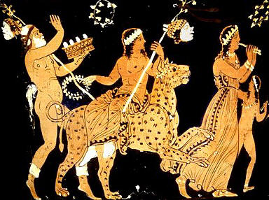
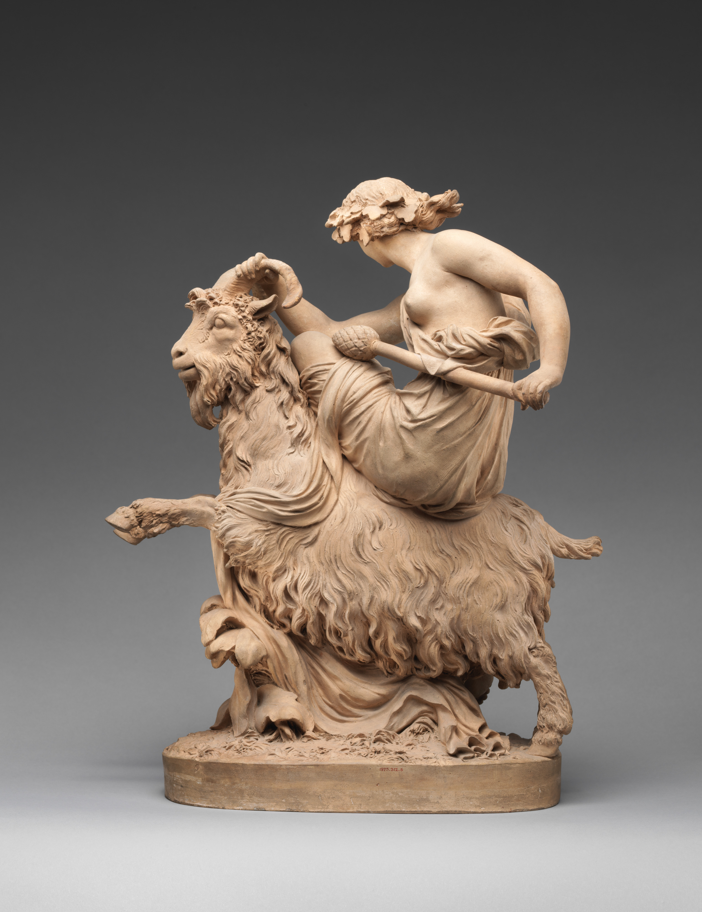
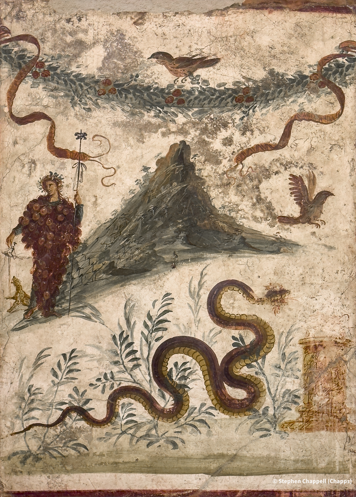
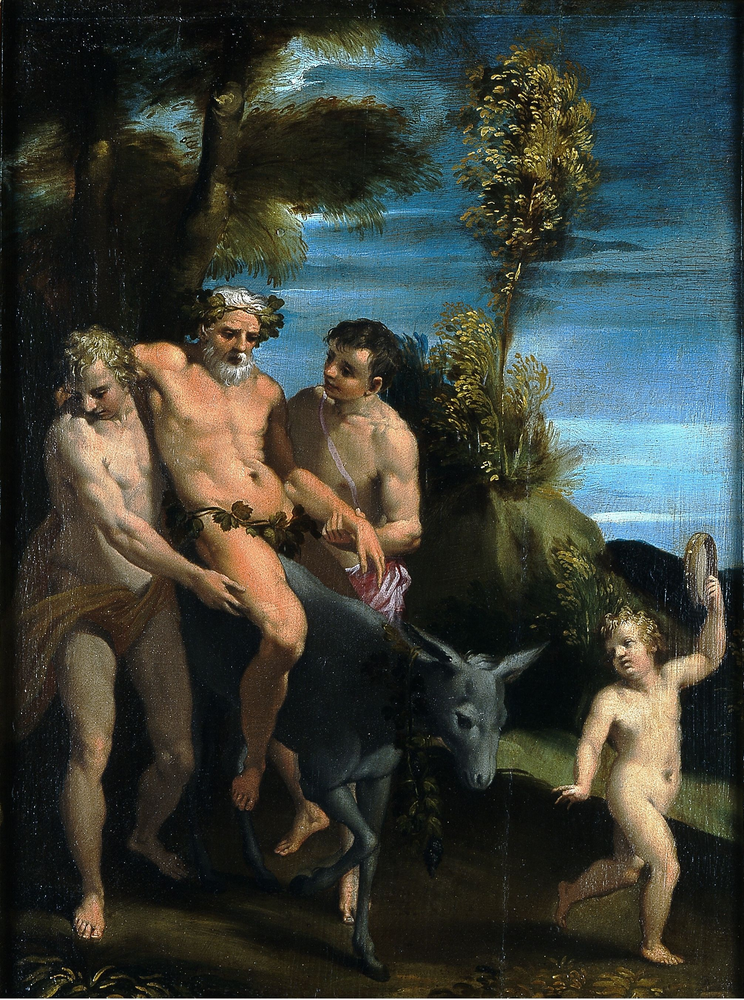
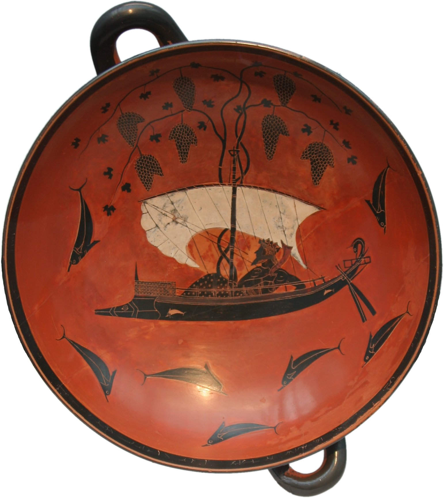
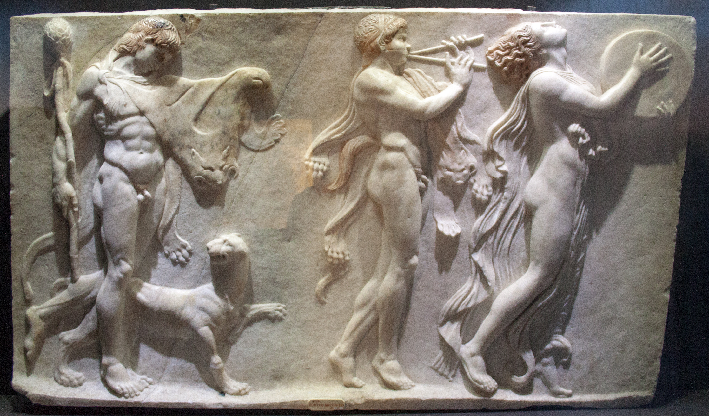

In ancient iconography, gods were identified by their attributes. Zeus held the thunderbolt. Athena carried the owl. Dionysus, alone among the Olympians, required an entire menagerie.
The animals that accompany the wine god in Greek and Roman art are not decorative. They constitute a symbolic vocabulary — each creature encoding an aspect of the Dionysiac experience: wildness, transformation, ecstasy, and the dissolution of boundaries between human and divine.
These creatures do not simply accompany Dionysus. They map the territory of intoxication and transformation that his worship promised.

the leopard: wildness untamed

The leopard, or panther, appears in Dionysiac iconography as early as the 6th century BCE, pulling the god's chariot or serving as his mount. In Titian's Bacchus and Ariadne (1520–23), cheetahs lead the god's procession across the canvas as he leaps toward the abandoned princess.
The wild cat signals danger beneath the revelry. Unlike Apollo's measured lyre or Athena's strategic wisdom, Dionysus offered something more primal: the dissolution of civilized restraint. The leopard — beautiful, predatory, impossible to domesticate — embodied this promise. The god of wine was never a safe god.
the goat: theater's origin

The goat is inseparable from the Dionysiac cult. Satyrs — the half-goat, half-human companions of the god — formed the original theatrical chorus. The very word tragedy derives from tragōidia, literally "goat song." Western drama emerged from Dionysiac ritual, born in the performances and processions dedicated to the wine god.
Satyr plays, performed after tragic trilogies at the Great Dionysia in Athens, preserved this connection. The goat represented the liminal space between human and animal, civilization and wilderness — the same threshold that wine itself could help one cross.

the snake: rebirth and mystery

The snake appears in the hands of maenads, the ecstatic female followers of Dionysus. In the famous Pompeii lararium fresco, a serpent winds beneath a grape-crowned Bacchus standing before Mount Vesuvius — an image that would prove tragically prophetic.
The snake sheds its skin and returns, an ancient symbol of cyclical renewal. This association made it central to mystery religions, including the Dionysiac mysteries that promised initiates a form of spiritual rebirth. The serpent embodied what wine itself offered: transformation, the death of one state and emergence into another.
the donkey: wisdom in folly

The donkey carried Silenus, the god's elderly tutor, perpetually drunk yet dispensing unexpected wisdom. In Greek mythology, Silenus was captured by King Midas, who hoped to extract secret knowledge from him. What Silenus revealed — that it is best for mortals never to have been born, and second best to die quickly — suggests depths beneath his comic exterior.
In Pomponio Amidano's painting, Silenus slumps on his mount, supported by attendants, a figure of comedy concealing philosophy. The donkey itself was associated with both foolishness and stubbornness — qualities that, in the Dionysiac context, might be reread as resistance to conventional wisdom and persistence in seeking deeper truths.
the dolphin: transformation made visible

The Homeric Hymn to Dionysus tells of Tyrrhenian pirates who captured a beautiful young man on the shore, not recognizing him as a god. They bound him and set sail, planning to sell him as a slave. But the ropes fell away. Wine flowed across the deck. Vines sprouted from the mast. The god transformed into a lion.
Terrified, the pirates leapt into the sea — and as they fell, Dionysus changed them into dolphins. Exekias immortalized the scene around 530 BCE in one of the most celebrated works of Greek vase painting: the god reclines serenely in his ship, grapevines heavy with fruit growing from the mast, while dolphins arc through the wine-dark sea below.
The dolphin represents transformation made visible — the consequence of failing to recognize the divine, but also the strange mercy of metamorphosis. The pirates were not destroyed; they were changed. This is Dionysus in essence: not punishment, but alteration. Not death, but becoming.

To enter his world was not to observe. It was to become.
These animals are not companions in any ordinary sense. They are states of being — visual markers for the psychological and spiritual territories that Dionysiac worship claimed to access. The leopard's wildness, the goat's liminality, the snake's renewal, the donkey's hidden wisdom, the dolphin's transformation: together they map what wine promised to those who gave themselves to the god.
Follow him long enough, the ancient images suggest, and you won't just see these creatures.
You'll become one.